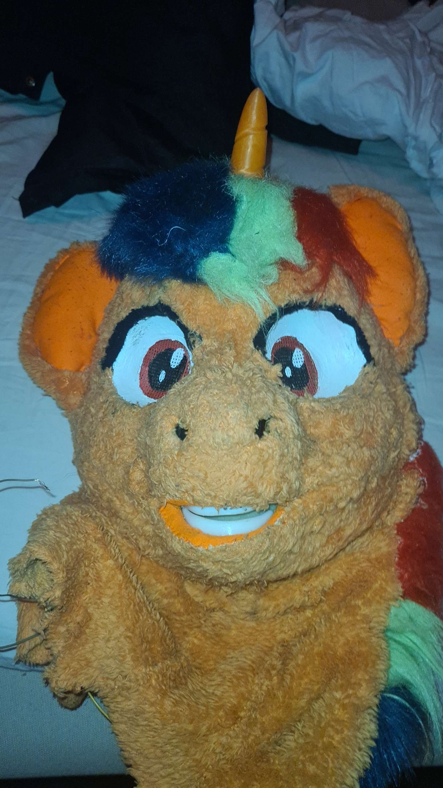
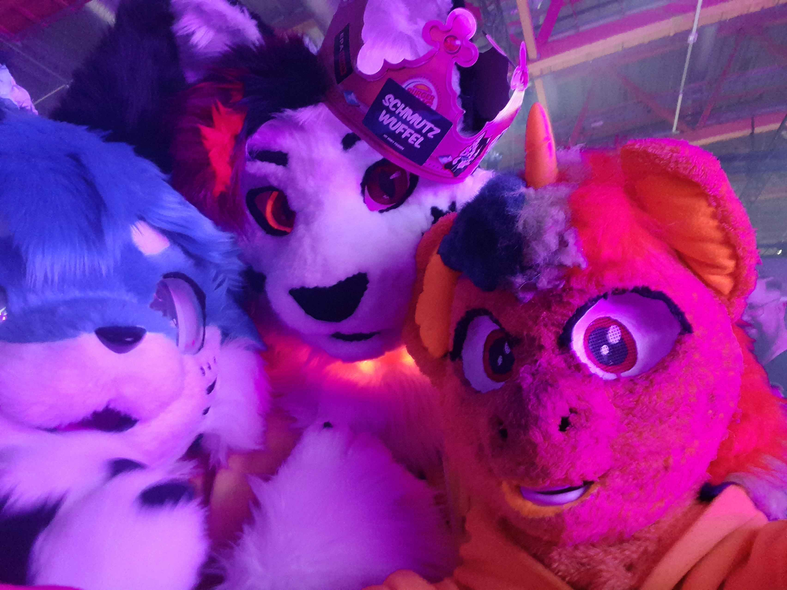
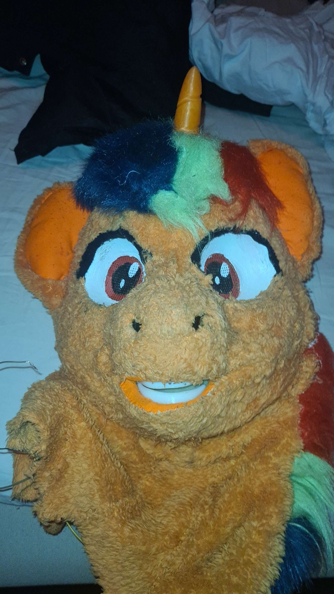
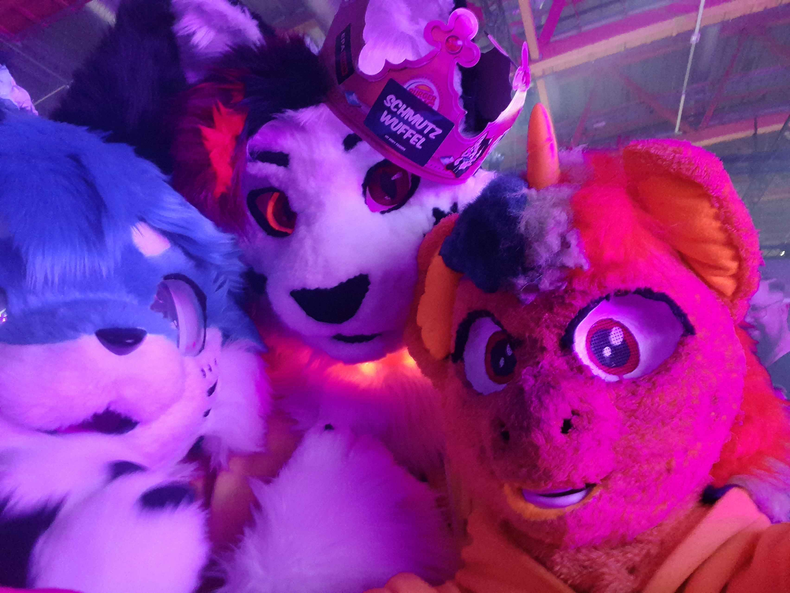

Välkommen till The CareFurs Jönköping!
Welcome to The CareFurs Jönköping!
En trygg plats för furries i Smålands hjärta The Care Furs Jönköping är en lokal furrygrupp för alla som identifierar sig som en del av furry-communityt i och runt Jönköping. Oavsett om du har varit furry i flera år eller är nyfiken och vill utforska vem du är i en trygg, inkluderande miljö – så är du välkommen hos oss! Vi fokuserar på gemenskap, respekt och öppenhet, och vi strävar efter att skapa ett utrymme där varje individ kan känna sig sedd, accepterad och fri att uttrycka sig. Här möts vi genom både online-aktiviteter och fysiska träffar – från fika och promenader till kreativa workshops, fursuit-häng och spontana meetups runt om i Jönköping med omnejd. Vi är en community där välmående och vänskap går först, och där både introverta och extroverta får plats att vara sig själva. Våra medlemmar är i olika åldrar och med olika bakgrunder, men har en sak gemensamt – kärleken till det fluffiga, kreativa och unika som furrykulturen innebär. 🔗 Gå med i vår Discord, delta i våra events, eller bara häng med och lurka tills du känner dig redo – du är alltid välkommen hos The Care Furs Jönköping.
A safe place for furries in the heart of Småland The Care Furs Jönköping is a local furry group for everyone who identifies as part of the furry community in and around Jönköping. Whether you've been a furry for years or are curious and want to explore who you are in a safe, inclusive environment – you are welcome here! We focus on community, respect, and openness, striving to create a space where every individual feels seen, accepted, and free to express themselves. We meet through both online activities and in-person events – from coffee meetups and walks to creative workshops, fursuit gatherings, and spontaneous meetups around Jönköping and nearby. We are a community where well-being and friendship come first, and where both introverts and extroverts can be themselves. Our members span different ages and backgrounds but share one thing in common – a love for the fluffy, creative, and unique aspects of furry culture. 🔗 Join our Discord, take part in our events, or just hang out and lurk until you feel ready – you are always welcome at The Care Furs Jönköping.
 


